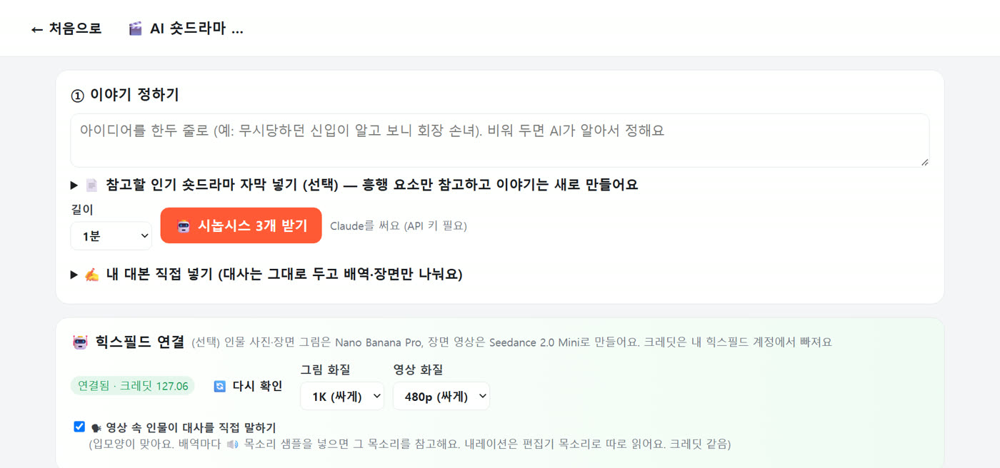
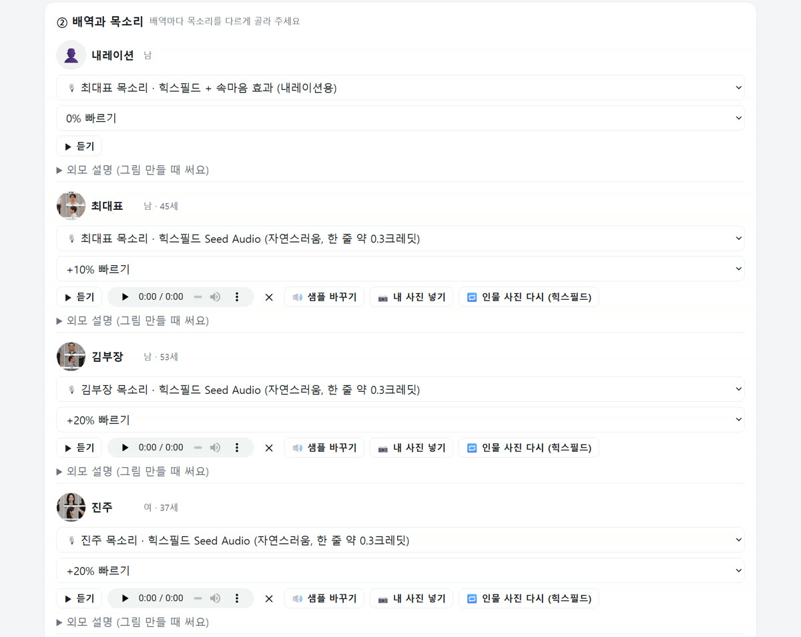
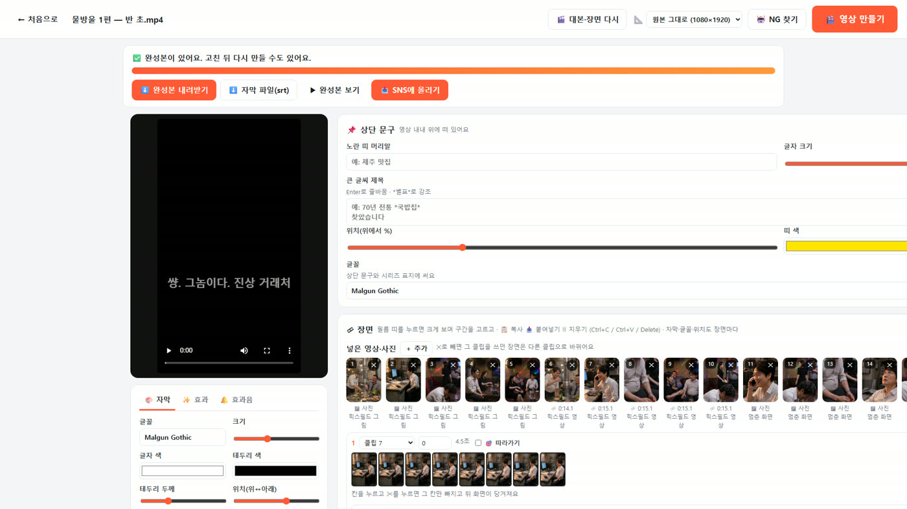

이런 걸 할 수 있어요
첫 화면에 기능이 다 모여 있어요.
🎙️
빠른 편집
말하는 영상을 끌어다 놓으면 무음·NG를 자르고 자막과 효과까지.
🛍️
자동 숏폼
제품 사진·영상만 넣으면 원고, 목소리, 장면, 자막까지 알아서.
🧰
제작 스튜디오
박힌 자막 지우기, 자르기·비율, 소리 빼기, 용량 줄이기, 배속, 썸네일.
🏭
이슈 쇼츠 공장
뉴스 랭킹에서 주제를 고르면 사실 확인, 대본, 목소리, 편집, 예약 업로드까지.
🎬
AI 숏드라마
대본을 넣으면 배역·장면을 나누고, 배역마다 목소리, 장면 그림·영상, 자막까지.
📤
SNS 올리기
유튜브·인스타에 바로 올리고, 댓글 키워드에 자동 답글도 달아요.
AI 숏드라마 미리 보기
네이버 웹소설 「물방울 사장님」을 보고 수정해서 만든 숏드라마 「물방울」 1·2편이 이 프로그램으로 만들어졌어요.
① 대본만 붙여 넣으면
- 대사는 그대로, 배역과 장면만 나눠 줘요
- 힉스필드(선택)를 연결하면 장면 그림·영상도 만들어요
- 영상 속 인물이 직접 대사를 말하게 할 수 있어요

② 배역마다 얼굴과 목소리
- 캐릭터 사진을 넣으면 장면이 바뀌어도 같은 얼굴
- 목소리 샘플을 넣고 빠르기도 조절
- 내레이션은 '속마음 효과'로 구분

③ 편집 화면에서 마무리
- 자막·장면을 다듬고 완성본 만들기
- 자막 파일(.srt) 내려받기
- 유튜브·인스타에 바로 올리기

설치 방법
처음 한 번만 하면 돼요.
- 프로그램 받기: 아래 다운로드 버튼으로 압축 파일을 받아서 원하는 곳(예:
C:\쇼츠편집기)에 압축을 풀어요. - 처음설치.bat 더블클릭 → 파이썬과 FFmpeg가 설치돼요. 끝나면 컴퓨터를 다시 시작해요.
- 편집기.bat 더블클릭 → 처음 한 번은 10분쯤 추가 설치를 하고, 인터넷 창에 편집기가 열려요. (안 열리면
http://127.0.0.1:5055) - 편집기 ⚙️ 설정에 Claude API 키를 넣어요. (console.anthropic.com → API Keys)
- (선택) 숏드라마 화면의 🤖 힉스필드 연결에서 설치·로그인하면 장면 그림·영상을 만들 수 있어요.
준비물과 비용
프로그램은 무료예요. AI 서비스는 각자 계정으로 써요.
| 필요한 것 | 용도 | 비용 |
|---|---|---|
| Claude API 키 (필수) | 대본 쓰기, 장면 고르기 등 AI 기능 | 쓴 만큼 (본인 계정) |
| 힉스필드 계정 (선택) | 숏드라마 장면 그림·영상, 자연스러운 목소리 | Starter 월 $19 = 270크레딧 정도 숏드라마 1편(약 1분 30초)에 약 60~85크레딧 |
| Qwen3-TTS (선택) | 목소리 샘플 복제 (내 컴퓨터에서) | 무료 |
아직 미완성 프로그램이에요. 계속 고치고 기능을 더하는 중이라 사용하다 오류가 날 수 있어요.
오류가 나면 오류 화면을 캡처해서 클로드(Claude)에게 붙여 넣고 "오류 수정해 줘"라고 하면 클로드가 고쳐 줘요. 불편한 점은 유튜브 댓글로 알려 주세요. 다음 버전에 반영할게요.
프로그램 받기
쇼츠 자동 컷편집기 + AI 숏드라마 · 미리보기 v0.1 · 윈도우 · 약 140MB